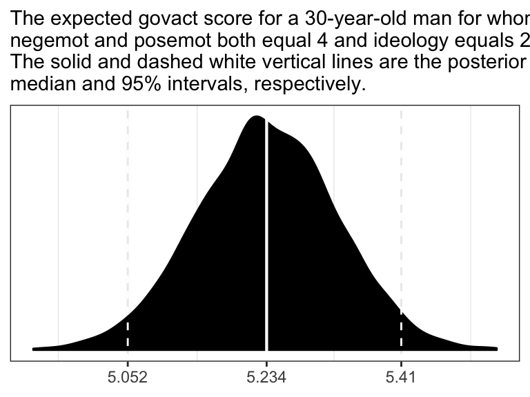
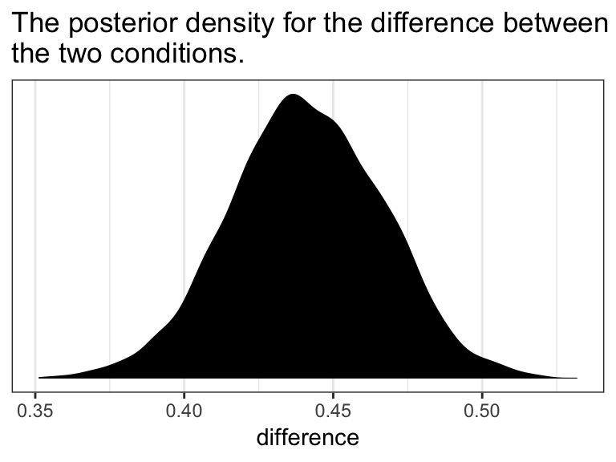

2.4 Multiple linear regression
here’s nothing particularly special about jumping from univariable to multivariable models in brms. You just keep tacking on predictors with the + operator.
model4 <-
brm(data = glbwarm, family = gaussian,
govact ~ 1 + negemot + posemot + ideology + sex + age,
chains = 4, cores = 4)print(model4)
#> Family: gaussian
#> Links: mu = identity; sigma = identity
#> Formula: govact ~ 1 + negemot + posemot + ideology + sex + age
#> Data: glbwarm (Number of observations: 815)
#> Samples: 4 chains, each with iter = 2000; warmup = 1000; thin = 1;
#> total post-warmup samples = 4000
#>
#> Population-Level Effects:
#> Estimate Est.Error l-95% CI u-95% CI Eff.Sample Rhat
#> Intercept 4.06 0.20 3.66 4.45 4000 1.00
#> negemot 0.44 0.03 0.39 0.49 4000 1.00
#> posemot -0.03 0.03 -0.08 0.03 4000 1.00
#> ideology -0.22 0.03 -0.27 -0.16 4000 1.00
#> sex -0.01 0.08 -0.16 0.14 4000 1.00
#> age -0.00 0.00 -0.01 0.00 4000 1.00
#>
#> Family Specific Parameters:
#> Estimate Est.Error l-95% CI u-95% CI Eff.Sample Rhat
#> sigma 1.07 0.03 1.02 1.12 4000 1.00
#>
#> Samples were drawn using sampling(NUTS). For each parameter, Eff.Sample
#> is a crude measure of effective sample size, and Rhat is the potential
#> scale reduction factor on split chains (at convergence, Rhat = 1).Here is the posterior mean, what you might call the Bayesian point estimate, for someone with:
- negative emotions = 3,
- positive emotions = 4,
ideology= 2,- is male (i.e.,
sex= 1), and - is 30 years of
age
fixef(model4)[1] +
fixef(model4)[2]*3 +
fixef(model4)[3]*4 +
fixef(model4)[4]*2 +
fixef(model4)[5]*1 +
fixef(model4)[6]*30
#> [1] 4.79Here’s the same deal for a man of the same profile, but with one point higher on negemot.
fixef(model4)[1] +
fixef(model4)[2]*4 +
fixef(model4)[3]*4 +
fixef(model4)[4]*2 +
fixef(model4)[5]*1 +
fixef(model4)[6]*30
#> [1] 5.23If you want a full expression of the model uncertaintly in terms of the shape of the posterior distribution and the 95% intervals, you’ll probably just want to use posterior_samples() and do a little data processing.
post <- posterior_samples(model4)
post <-
post %>%
mutate(our_posterior = b_Intercept + b_negemot*4 + b_posemot*4 + b_ideology*2 + b_sex*1 + b_age*30)
# This intermediary step will make it easier to specify the break points and their labels for the x-axis
post_summary <-
quantile(post$our_posterior, probs = c(.025, .5, .975)) %>%
as_tibble() %>%
mutate(labels = value %>%
round(digits = 3) %>%
as.character())
ggplot(data = post,
aes(x = our_posterior)) +
geom_density(fill = "black") +
geom_vline(xintercept = post_summary$value,
size = c(.5, .75, .5), linetype = c(2, 1, 2), color = "white") +
scale_x_continuous(NULL,
breaks = post_summary$value,
labels = post_summary$labels) +
scale_y_continuous(NULL, breaks = NULL) +
labs(subtitle = "The expected govact score for a 30-year-old man for whom\nnegemot and posemot both equal 4 and ideology equals 2.\nThe solid and dashed white vertical lines are the posterior\nmedian and 95% intervals, respectively.") +
theme_bw()
In the text, Hayes showed that individuals based on these two profiles would be expected to differ by 0.441 (i.e., 5.244 - 4.803 = 0.441). That’s fine if you’re only working with OLS point estimates. But a proper Bayesian approach would express the difference in terms of an entire poster distribution, or at least a point estimate accompanied by some sort of intervals. Here we’ll just work with the posterior to create a difference distribution. You could do that with a little deft posterior_samples() wrangling. Here we’ll employ fitted().
nd <-
tibble(negemot = c(3, 4),
posemot = 4,
ideology = 2,
sex = 1,
age = 30)
fitted(model4,
newdata = nd,
summary = F) %>%
as_tibble() %>%
rename(condition_a = V1,
contition_b = V2) %>%
mutate(difference = contition_b - condition_a) %>%
ggplot(aes(x = difference)) +
geom_density(fill = "black", color = "transparent") +
scale_y_continuous(NULL, breaks = NULL) +
ggtitle("The posterior density for the difference between\nthe two conditions.") +
theme_bw()
2.4.1 The standardized regression model.
brms doesn’t automatically give us the standardized coefficients the way OLS output often does, we’ll have to be proactive. One solution is just to standardized the data themselves and then re-fit the model with those standardized variables. That leads us to the issue of how one standardized variables to begin with. Recall that standardizing entails subtracting the mean of a variable from that variable and then dividing that value by the standard deviation. We don’t want to do that by hand. So one handy way is to make a custom function to do that work for us.
sandardize <- function(x){
(x - mean(x))/sd(x)
}Go here to learn more about making custom functions in R.
Here we’ll employ our custom standardize() function to make standardized versions of our variables.
glbwarm <-
glbwarm %>%
mutate(posemot_z = sandardize(posemot),
negemot_z = sandardize(negemot),
ideology_z = sandardize(ideology),
sex_z = sandardize(sex),
age_z = sandardize(age))Now we’ve got us our standardized variables, let’s fit a standardized model.
model4_z <-
brm(data = glbwarm, family = gaussian,
govact_z ~ 1 + negemot_z + posemot_z + ideology_z + sex_z + age_z,
chains = 4, cores = 4)Here are the newly standardized coefficient summaries, minus the Intercept.
fixef(model4_z)[-1, ] %>% round(3)
#> Estimate Est.Error Q2.5 Q97.5
#> negemot_z 0.495 0.030 0.435 0.553
#> posemot_z -0.027 0.028 -0.082 0.025
#> ideology_z -0.243 0.031 -0.304 -0.182
#> sex_z -0.003 0.028 -0.059 0.051
#> age_z -0.016 0.029 -0.073 0.041Our coefficients match up nicely with those in the text. Just as with Hayes’s OLS estimates, we should not attempt to interpret the standardized sex_z coefficient from our Bayesian model.
Here’s how we’d fit a partially-standardized model–a model in which all variables except for sex are standardized.
model4_z_p <-
update(model4_z,
newdata = glbwarm,
formula = govact_z ~ 1 + negemot_z + posemot_z + ideology_z + sex + age_z,
chains = 4, cores = 4)And here are the coefficient summaries, including the Intercept, for the partially-standardized model.
fixef(model4_z_p) %>% round(digits = 3)
#> Estimate Est.Error Q2.5 Q97.5
#> Intercept 0.003 0.040 -0.075 0.081
#> negemot_z 0.494 0.029 0.438 0.550
#> posemot_z -0.027 0.028 -0.082 0.027
#> ideology_z -0.243 0.030 -0.302 -0.184
#> sex -0.006 0.055 -0.114 0.101
#> age_z -0.015 0.028 -0.069 0.038As Hayes wrote, now sex = -0.006 has a sensible interpretation. “We can say that men and women differ by [-0.006] standard deviations in their support for government action when all other variables in the model are held constant (p. 53).”
On page 54, Hayes gave us the equation to transform unstandardized coefficients to standardized ones:
\[\tilde{b}_{i} = b_{i}\left(\frac{SD_{X_{i}}}{SD_{Y}}\right)\]
Let’s give it a whirl with negemot.
# Here's the coefficient for `negemot` from the standardized model, `model4_z`
fixef(model4_z)["negemot_z", "Estimate"]
#> [1] 0.495
# Here's the coefficient for `negemot` from the unstandardized model, `model4`
fixef(model4)["negemot", "Estimate"]
#> [1] 0.441
# And here we use Hayes's formula to standardize the unstandardized coefficient
fixef(model4)["negemot", "Estimate"]*(sd(glbwarm$negemot)/sd(glbwarm$govact))
#> [1] 0.495Looks like we got it within rounding error–pretty good! However, that was just the posterior mean, the Bayesian point estimate. If we want to more fully express the uncertainty around the mean–and we do–, we’ll need to work with the posterior draws.
# the posterior draws from the unstandardized model
posterior_samples(model4) %>%
# using Hayes's formula to standardize `b_negemot`
mutate(`hand-made b_negemot_z` = b_negemot*(sd(glbwarm$negemot)/sd(glbwarm$govact))) %>%
# taking on the `b_negemot_z` column from the standardized `model4_z` models posterior draws
bind_cols(posterior_samples(model4_z) %>%
select(b_negemot_z)) %>%
# isolating those two columns
select(`hand-made b_negemot_z`, b_negemot_z) %>%
# converting the data to the long format and grouping by `key`
gather() %>%
group_by(key) %>%
# here we summarize the results
summarise(mean = mean(value),
sd = sd(value),
ll = quantile(value, probs = .025),
ul = quantile(value, probs = .975)) %>%
mutate_if(is.double, round, digits = 3)
#> # A tibble: 2 x 5
#> key mean sd ll ul
#> <chr> <dbl> <dbl> <dbl> <dbl>
#> 1 b_negemot_z 0.495 0.03 0.435 0.553
#> 2 hand-made b_negemot_z 0.495 0.029 0.437 0.552Our summary confirms that we can apply Hayes’s formula to a posterior_samples() column in order to get fuller summary statistics for a hand-converted standardized coefficient. This would be in full compliance with, say, APA recommendations to include 95% intervals with all effect sizes–the standardized regression coefficient being the effect size, here.